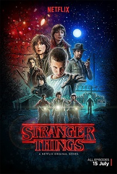

Series
-
House of Cards
House of Cards sigue al político del partido demócrata Francis Underwood (Kevin Spacey) en sus intentos por alcanzar un alto puesto en la esfera política de Washington.

-
La casa de papel
Ocho ladrones toman rehenes y se resguardan en la Fábrica Nacional de Moneda de España, mientras el líder de la banda manipula a la policía para cumplir con su plan.
-
Ozark
Un asesor financiero arrastra a su familia desde Chicago hasta los lagos de Ozark para lavar 500 millones de dólares en cinco años y tranquilizar a un jefe narco.

-
Stranger Things
La historia arranca durante la década de los 80, en el pueblo ficticio de Hawkins, Indiana, cuando un niño llamado Will Byers desaparece misteriosamente.
 -
The Crown
Drama sobre las rivalidades políticas y los romances acaecidos durante el reinado de Isabel II, así como de los eventos que moldearían la segunda mitad del siglo XX.

Películas
-
Beckett
Una pareja de novios se dispone a pasar unas vacaciones idílicas en Atenas (Grecia). Sin embargo, al poco de llegar a la capital griega acaban envueltos en una violenta conspiración.